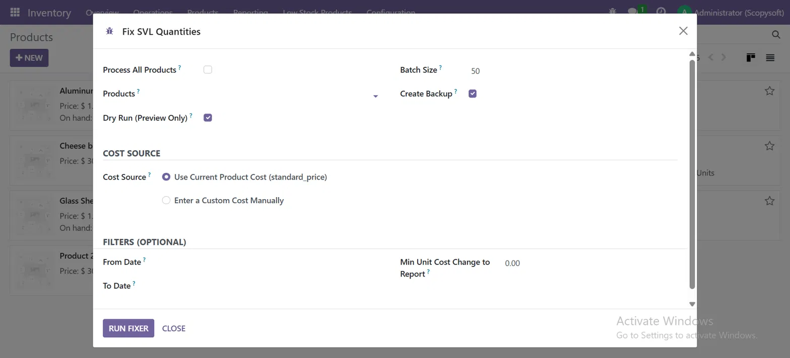
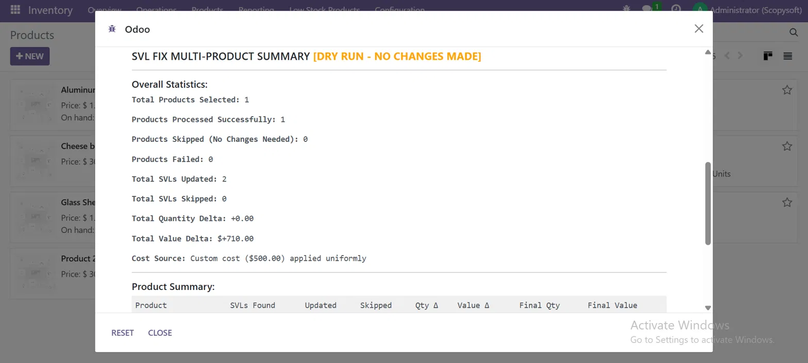
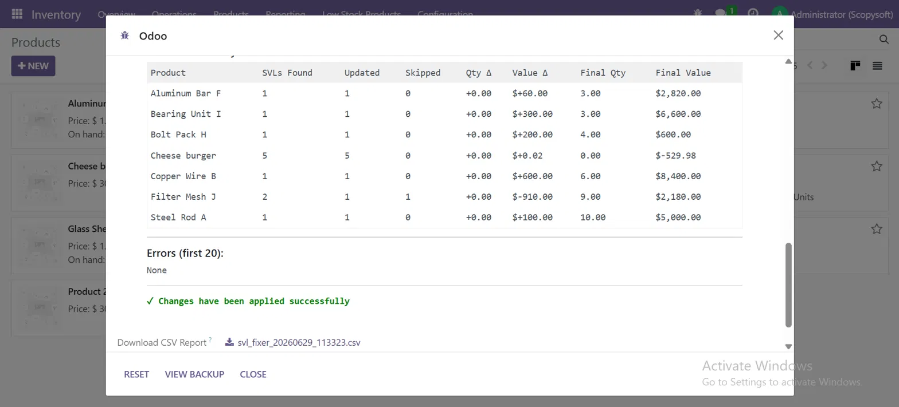
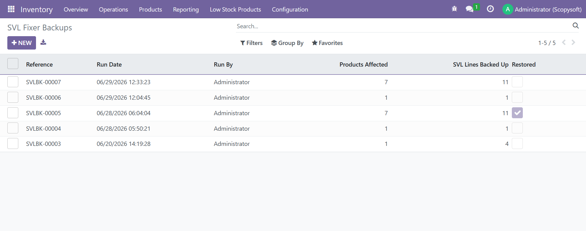
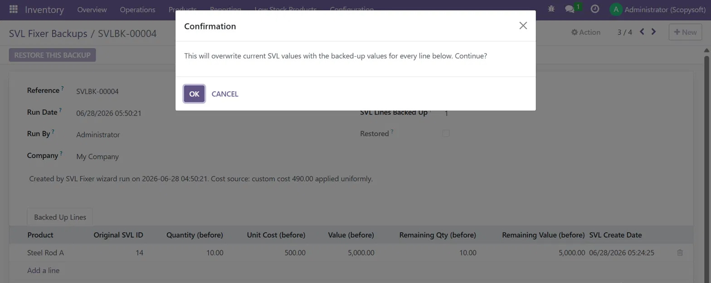
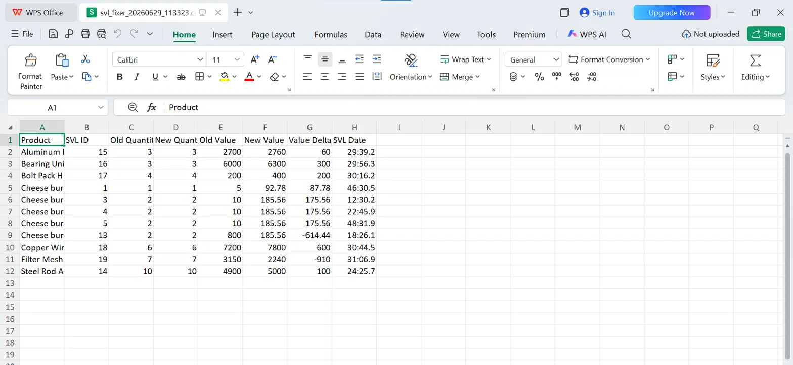

Your stock valuation layers have wrong quantities or costs. Odoo won't fix them automatically. This module does — with dry run preview, full backup, date filtering, and one-click restore.
The Problem
Several common Odoo scenarios leave stock valuation layers with incorrect quantities or unit costs — and Odoo provides no built-in tool to correct them in bulk.
You updated standard_price on a product, but historical SVLs still reflect the old cost. Your inventory valuation is now wrong for past periods.
After migrating from another system or Odoo version, SVL quantities don't match the actual stock moves they're linked to.
A previous fix attempt or manual database change left SVLs in an inconsistent state that's hard to untangle one by one.
Your inventory valuation report shows numbers that don't match what's physically in stock, with no clear audit trail of what went wrong.
What You Get
This isn't just a script — it's a proper Odoo tool with UI, backup records, filters, and a CSV trail for every run.
Preview exactly what will change before touching a single record. See product-by-product: SVLs found, value delta, final value — all without writing anything.
Every run creates a named backup record (SVLBK-00001, etc.) with the full before-state of every SVL line. Browse backups in the UI — no database access needed.
Made a mistake? Open any backup record and click "Restore This Backup" to revert exactly those SVL lines to their pre-fix values. Real undo, not just a table.
Limit the fix to SVLs created within a specific date window. Fix last month's problem without touching records from two years ago.
Apply the product's current standard_price uniformly, or enter a custom cost manually for cases where the product price isn't what you want to backfill.
Every run generates a downloadable CSV with SVL ID, product, old quantity, new quantity, old value, new value, and value delta. Keep a paper trail per fix.
Skip SVLs where the unit cost difference is below your set threshold. Useful on large catalogs where you only care about meaningful discrepancies.
Configurable batch size with mid-run commits. Process thousands of SVLs safely without memory issues or timeouts on large databases.
How It Works
Follow these steps to fix SVLs safely on any database.
Set the product's cost field to the correct value you want applied to historical SVLs. Changing cost on the product form alone only creates a new forward-looking SVL — it leaves old ones wrong.
Go to Inventory → Operations → Fix SVL Quantities. Select your products, set date range if needed.
Tick "Dry Run (Preview Only)" and click Run Fixer. Review the summary table — products affected, value delta per product, final values. Confirm it's what you expect.
Untick Dry Run and run again. The module creates a backup, applies changes in batches, and shows a live results table. Errors trigger automatic rollback.
Download the CSV report for your records. Check your inventory valuation report to confirm the numbers now match expectations.
If anything looks wrong, go to Inventory → Configuration → SVL Fixer Backups, open the backup from your run, and click Restore This Backup.
Cost Source
Choose the right cost source for your specific problem.
| Mode | When to Use | How It Works |
|---|---|---|
| Use Current Product Cost | Your SVLs are out of sync with the product's current standard_price. You want to realign all historical SVLs to match today's cost. | Reads standard_price from the product form and applies it to all matching SVLs in the selected date range. |
| Enter a Custom Cost Manually | You know the specific correct historical cost, but the current product price is different or unrelated to the mistake you're fixing. | You type in the cost value directly. That exact value is applied to all matching SVLs — ignoring whatever is on the product form. |
See It In Action
No mockups. No demo data fabricated for this listing.

01 Wizard — product selection, cost source, date range, dry run toggle

02 Dry Run result — full summary before any changes are made

03 Live run — per-product table with value deltas and confirmation

04 Backup list — every run tracked with reference, date, products affected

05 Restore — one-click revert with full before-state per SVL line

06 CSV export — downloadable report for every run
FAQ
The module is designed primarily for Standard Cost products. For AVCO products, the correct cost at any point in time depends on the sequence of receipts — applying a single uniform cost to all historical SVLs will produce incorrect average cost calculations. Use with caution on AVCO products and always run Dry Run first.
The module modifies SVL records directly. It does not automatically create new journal entries to match. If your SVLs are linked to posted accounting moves, your inventory valuation and GL may diverge. This is an administrator tool — review your accounting impact after any fix.
Dry Run reads all the SVLs, calculates what changes would be made, and shows you the full summary table — without writing a single record. No backup is created in Dry Run mode. It is purely read-only.
The module uses transaction rollback on errors. If an exception occurs, all changes from that batch are rolled back. The backup record from before the run remains intact so you can restore the pre-run state manually.
Yes. Use the From Date and To Date fields to filter by SVL creation date. Only SVLs created within that window will be processed. Older or newer records are untouched.
This skips SVLs where the difference between the current unit cost and the correct cost is below your set amount. Useful on large catalogs to ignore rounding differences and focus only on meaningful discrepancies.
No. The module applies one cost uniformly to all selected SVLs — either the current product standard_price or a manually entered value. It does not reconstruct what the cost was at the time of each individual move. For that level of historical reconstruction, you would need to manually specify cost per move.